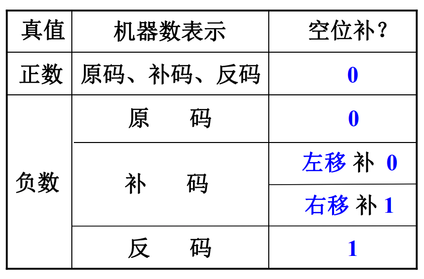
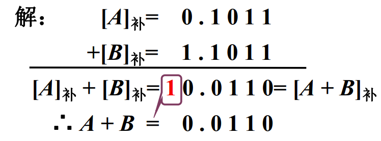
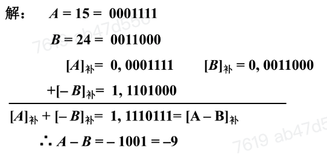
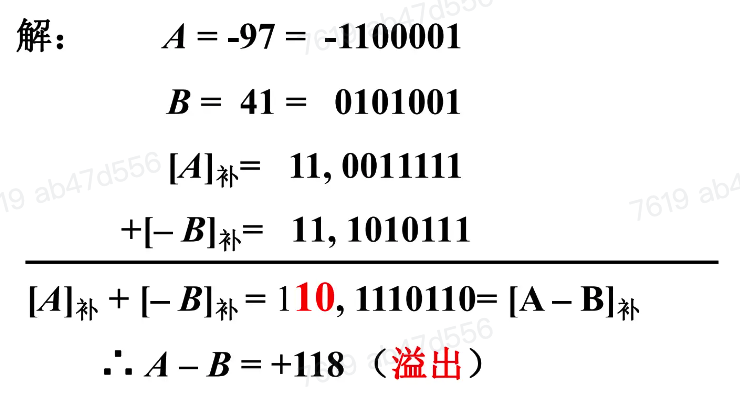
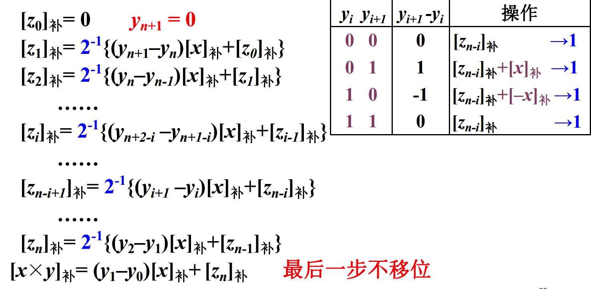
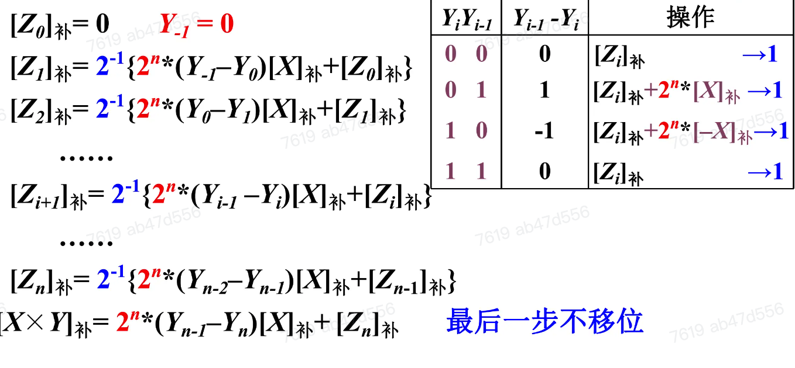
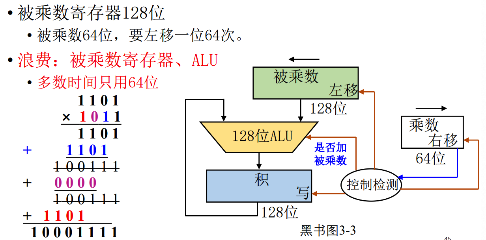
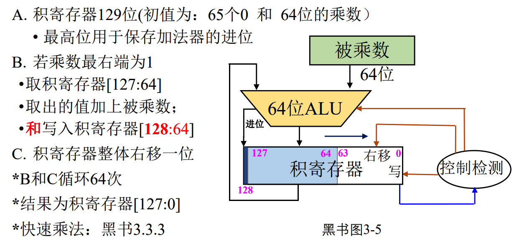
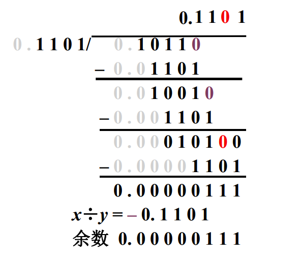

计算机中数的运算方法
算数移位与逻辑移位¶
算数移位¶
算数移位规则¶
- 符号位不变
- 机器数的移位与真值移位一致

正数移位均补0，负数原码均补0，负数补码高位补1，反码都补1
算数移位和逻辑移位的区别¶
- 算数移位：有符号数的移位
- 逻辑移位：无符号数的移位
- 逻辑左移：低位添0，高位丢弃
- 逻辑右移，高位添0，低位丢弃
例：补码表示的机器数10110010
| 逻辑左移：01100100 | 逻辑右移：01011001 |
|---|---|
| 算数左移：11100100 | 算术右移：11011001 |
例：设机器数字长8位（含1为符号位），当A=+26时，三种机器数左、右移一位和两位后的表示形式以及对应的真值
则\([A]_原=[A]_补=[A]_反=0,0011010\)
| 移位操作 | 机器数 | 对应的真值 |
|---|---|---|
| 无 | 0,0011010 | +26 |
| 左移一位 | 0,0110100 | |
| 右移一位 | 0,0001101 | |
| 左移两位 | 0,1101000 | |
| 右移两位 | 0,1100110 |
定点运算¶
定点加减法运算（补码）¶
- 加法
- 整数：\([A]_补+[B]_补=[A+B]_补\)
- 小数：\([A]_补+[B]_补=[A+B]_补\)
- 减法：\(A-B=A+(-B)\)
- 整数：\([A-B]_补=[A+(-B)_补]=[A_补]+[-B]_补\)
- 小数：\([A-B]_补=[A+(-B)_补]=[A_补]+[-B]_补\)
连同符号位一起相加，符号位产生的进位自然丢掉
例：设A=0.1011，B=-0.0101，用补码运算求A+B=？
解答

已知\([X]_补\)，可以通过：包括符号位在内，每位取反，末位加1求出\([-X]_补\)
例：已知机器数长为8位（包含1位符号位），设A=15，B=24，用补码求解A-B
解答

例：已知机器数长为8位（包含1位符号位），设A=-97，B=41，用补码求解A-B
解答
有$[A]_补+[-B]_补=10,1110110=[A-B]_补$，有$A-B=+118$（溢出）一位符号位判定溢出¶
- 参加加法的两个数（减法时+减数相反数的补码）
- 如果符号不同，不会溢出
- 如果符号相同，其结果的符号与原操作数的符号不同，即为溢出
两位符号位判断溢出¶
- 小数变形补码
-
整数变形补码
-
最高符号位代表其真正的符号
- 结果的双符号位相同 未溢出
- 结果的双符号位不同 溢出
设机器数字为9位（含2位符号位），且\(A=-97，B=41\)，用补码求\(A-B\)
解答

乘法运算¶
原码一位乘法运算规则¶
- 整数：设\([X]_原=X_nX_{n-1}\dots X_1X_0,[Y]_{原}=Y_nY_{n-1}\dots Y_1Y_0\)
- 小数：设\([x]_原=x_0\cdot x_1x_2\dots x_n,[y]_原=y_0\cdot y_1y_2\dots y_n\)
乘积的符号位单独处理，数值部分为绝对值相乘
补码一位乘法运算规则（小数）¶
设被乘数\([x]_补=x_0\cdot x_1x_2\dots x_n\)，乘数\([y]_补=y_0\cdot y_1y_2\dots y_n\)
- 被乘数任意，乘数为正（类似原码乘）
- 但加和移位按补码规则运算，积的符号自然形成
- 被乘数任意，乘数为负
- 乘数\([y]_补\)，去掉符号位，操作同上，最后加上\([-x]_补\)，校正
补码一位乘法运算规则（整数）¶
设被乘数\([X]_补=X_n\dots X_1X_0\),乘数\([Y]_补=Y_n\dots Y_1Y_0\)
- 被乘数任意，乘数为正（类似原码乘），但加和移位按补码规则运算，积的符号自然形成
- 被乘数任意，乘数为负，乘数\([y]_补\)，去掉符号位，操作同上，最后加\([–x]_补\)，校正
booth算法（小数，被乘数、乘数符号任意）¶
设x和y的补码表示分别为\([x]_补=x_0.x_1x_2\dots x_n,[y]_补=y_0.y_1y_2\dots y_n\)
booth小数算法递推公式

booth算法（整数，被乘数、乘数符号任意）¶
设X和Y的补码表示分别为\([X]_补=X_n,X_{n-1}\dots X_0,[Y]_补=Y,Y_{n-1}\dots Y_0\)
booth整数递推公式

乘法器硬件示意图¶
展开


除法运算¶

分析笔算除法¶
- 商符单独处理
- 心算上商
- 部分余数不动低位补0
- 如果部分余数大于除数，则减右移的除数
- 上商位置不固定
恢复余数法¶
符号位单独处理，取除数和被除数绝对值进行运算
- 余数（被除数）减去除数\([y^*]_补(+[-y^*]_补)\to 余数\)
- if 余数为负（不够减）
- then 商上0，余数+[y*]补（恢复余数）
- else (够减) 商上1
- if 循环次数<数据位数n
- then 余数逻辑左移一位，加[-y*]补 ；重复步骤2
不恢复余数法（加减交替）¶
- 余数为正，上商1，逻辑左移1位，+[– y*]补
- 余数为负，上商0，逻辑左移1位，+[ y*]补
浮点运算¶
浮点四则运算（对阶、尾数求和、规格化、舍入）¶
\(x=S_x\cdot 2^{j_x}\quad y=S_y\cdot 2^{j_y}\)
- 对阶：使两个浮点数的阶码相同
- 求阶差
- 对齐原则：小阶向大阶看齐
左规和右规¶
- 原码规格化判断方法：不论正数、负数，第一数位为1
- 补码规格化判断方法：符号位和第一数位不同
- 补码左规:尾数每左移1位，阶码减1，直到数符与第一数位不同
- 右规：当（小数）尾数溢出（ >1）时，需 右规